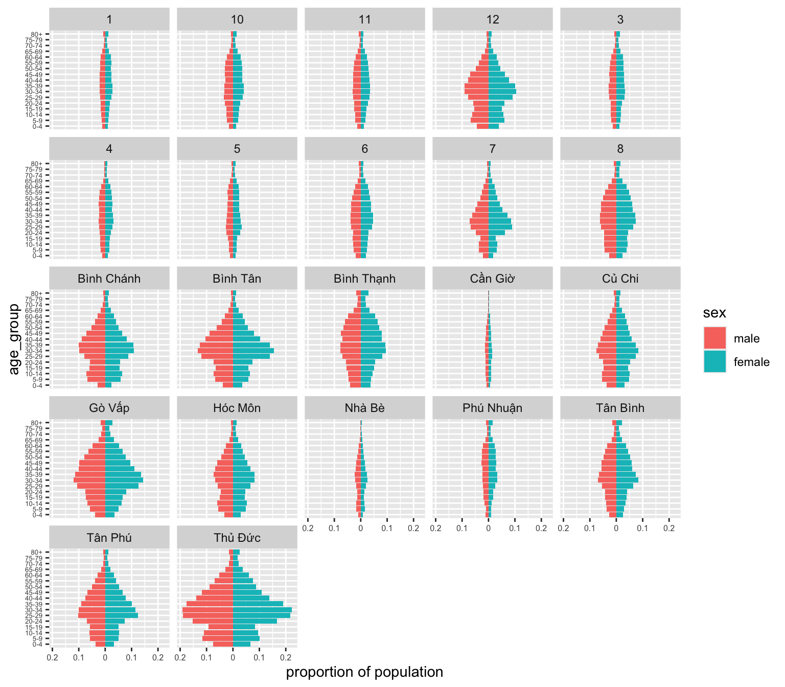
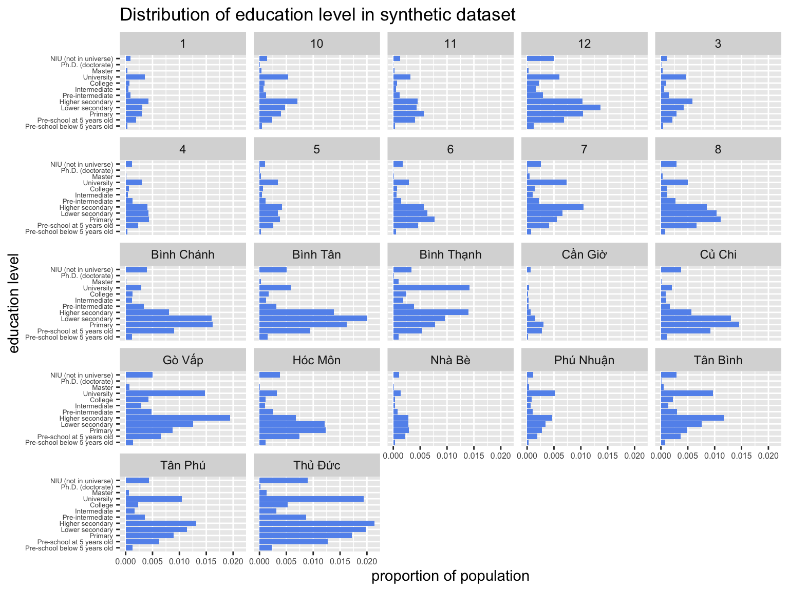
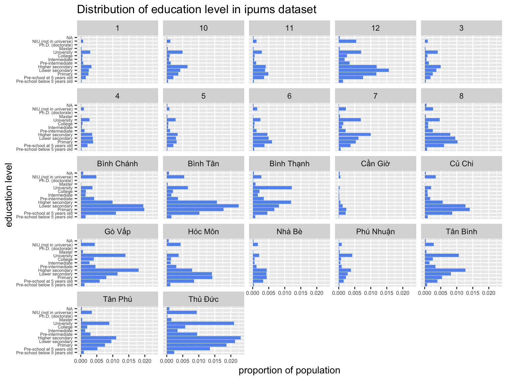
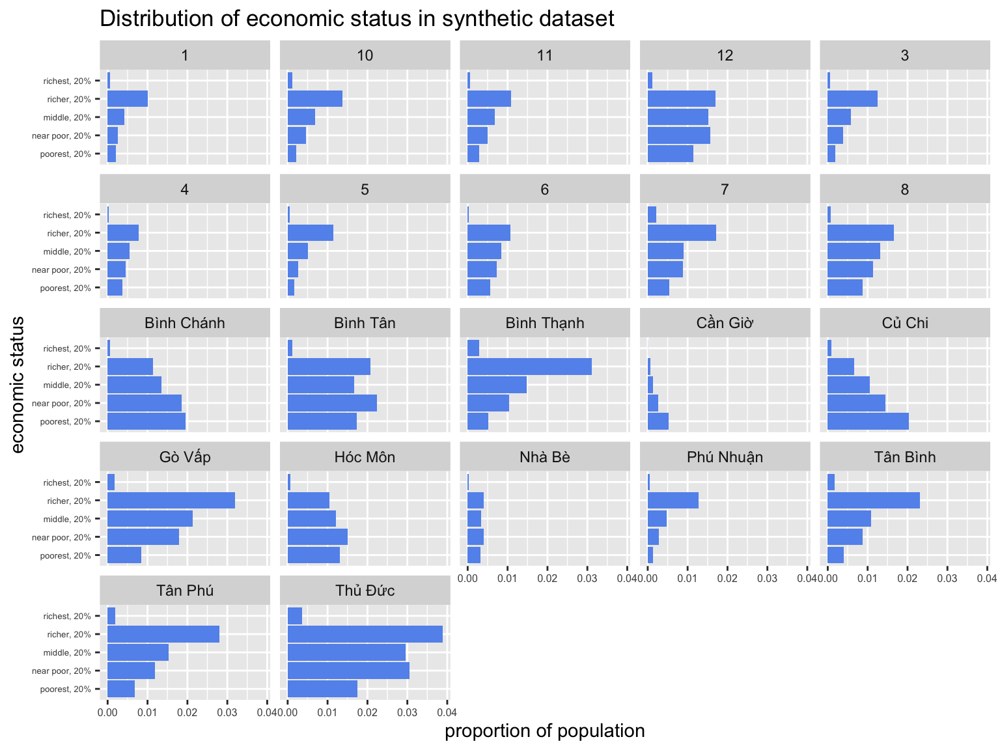

library(tidyverse)
library(simPop)
library(psych)Synthetic Population for Ho Chi Minh city
Input data
IPUMS dataset for Vietnam in 2019 is used as the micro data to generate the synthetic population for Ho Chi Minh city.
A census dataset for Ho Chi Minh will also be used for calibrating sample weights in IPUMS dataset and for allocating the synthetic population to commune level (which is not available in the IPUMS dataset).
census_hcm <- readRDS("data/census2019_hcm.rds")
micro_data <- read_csv("data/ipumsi_00013/GEO1_VN2019_79.csv")Rows: 442474 Columns: 231
── Column specification ────────────────────────────────────────────────────────
Delimiter: ","
dbl (231): COUNTRY, YEAR, SAMPLE, SERIAL, PERSONS, HHWT, SUBSAMP, GQ, UNREL,...
ℹ Use `spec()` to retrieve the full column specification for this data.
ℹ Specify the column types or set `show_col_types = FALSE` to quiet this message.colnames(micro_data) <- tolower(colnames(micro_data))Data preprocessing
Convert from codes to districts name, turn it into factor
# ----- label qh
micro_data <- micro_data %>%
mutate(
qh = case_when(
geo2_vn == 704079760 ~ "Quận 1",
geo2_vn == 704079761 ~ "Quận 12",
geo2_vn == 704079762 ~ "Thủ Đức",
geo2_vn == 704079763 ~ "Thủ Đức",
geo2_vn == 704079764 ~ "Gò Vấp",
geo2_vn == 704079765 ~ "Bình Thạnh",
geo2_vn == 704079766 ~ "Tân Bình",
geo2_vn == 704079767 ~ "Tân Phú",
geo2_vn == 704079768 ~ "Phú Nhuận",
geo2_vn == 704079769 ~ "Thủ Đức",
geo2_vn == 704079770 ~ "Quận 3",
geo2_vn == 704079771 ~ "Quận 10",
geo2_vn == 704079772 ~ "Quận 11",
geo2_vn == 704079773 ~ "Quận 4",
geo2_vn == 704079774 ~ "Quận 5",
geo2_vn == 704079775 ~ "Quận 6",
geo2_vn == 704079776 ~ "Quận 8",
geo2_vn == 704079777 ~ "Bình Tân",
geo2_vn == 704079778 ~ "Quận 7",
geo2_vn == 704079783 ~ "Củ Chi",
geo2_vn == 704079784 ~ "Hóc Môn",
geo2_vn == 704079785 ~ "Bình Chánh",
geo2_vn == 704079786 ~ "Nhà Bè",
geo2_vn == 704079787 ~ "Cần Giờ"),
qh = str_remove(qh, "(Quận |Huyện )")
)
vn_districts <- sort(unique(micro_data$qh))
micro_data$qh <- factor(micro_data$qh, levels = vn_districts)
census_hcm <- census_hcm %>%
mutate(
district = str_remove(district, "(Quận |Huyện )"),
district = ifelse(district %in% c("2", "9", "Thủ Đức"), "Thủ Đức", district),
# change district var to factor
district = factor(district, levels = vn_districts)
)Create new variable economic_status using PCA
# old socioeco_indicators
# socioeco_indicators <- c("ownership", "watsup", "aircon", "computer", "washer", "refrig", "tv", "radio", "electric", "hotwater", "phone")
socioeco_indicators <- c(
"vn2019a_ownershp",
"vn2019a_watsrc", "vn2019a_aircon", "vn2019a_computer", "vn2019a_washer", "vn2019a_refrig", "vn2019a_tv", "vn2019a_radio", "vn2019a_bike", "vn2019a_motorcyc", "vn2019a_boat","vn2019a_car",
"vn2019a_light", "vn2019a_watheat", "vn2019a_phone")
# standardize values
micro_data <- micro_data %>%
mutate_at(
socioeco_indicators,
~ ifelse(. == 1, 1, 0)
)
# perform pca
prn <- principal(micro_data[, socioeco_indicators],
rotate = "varimax", nfactors = 3, covar=TRUE, scores = TRUE)
# use scores to create wealth index quintiles
micro_data <- micro_data %>%
mutate(
economic_status = as.factor(
cut(
prn$scores[, 1], breaks = 5,
labels = c("poorest, 20%", "near poor, 20%", "middle, 20%",
"richer, 20%", "richest, 20%")
)
)
) %>%
select(-any_of(socioeco_indicators)) Try plotting the economic status distribution
Code
total <- nrow(micro_data)
micro_data %>% group_by(economic_status, qh) %>%
summarize(
percen = n()/total
) %>% ungroup() %>%
ggplot() +
geom_col(
aes(x=percen, y = economic_status)
) +
facet_wrap(vars(qh))`summarise()` has grouped output by 'economic_status'. You can override using
the `.groups` argument.Create new variable for age range
Note: some age levels are missing in census data (IPUMS have samples from 0-108 years old while census only cover 1-81 years of age)
# create age_group variable for micro_data
micro_data <- micro_data %>%
mutate(
age_group = factor(
cut(
as.numeric(vn2019a_age),
c(seq(0, 80, 5),Inf),
right=FALSE,
labels = c("0-4", "5-9", "10-14","15-19",
"20-24","25-29","30-34","35-39",
"40-44","45-49","50-54","55-59",
"60-64","65-69","70-74","75-79",
"80+")
)
)
)
# create age_group variable for census to calibrate sample weight
census_hcm <- census_hcm %>%
mutate(
age_group = factor(
cut(
as.numeric(age),
c(seq(0, 80, 5),Inf),
right=FALSE,
labels = c("0-4", "5-9", "10-14","15-19",
"20-24","25-29","30-34","35-39",
"40-44","45-49","50-54","55-59",
"60-64","65-69","70-74","75-79",
"80+")
)
)
)Standardize labels for gender variable
micro_data <- micro_data %>%
mutate(
sex = factor(vn2019a_sex,
levels = c(1,2),
labels = c("male", "female"))
)
census_hcm <- census_hcm %>%
mutate(
sex = factor(sex,
levels = c("male", "female"))
)Make sure categorical variables to be simulated are defined as factor in sample data
Variables of interest
highest level of education or training completed (
vn2019a_edlev)urban - rural status (
vn2019a_urban)follow faith/religion or not (
vn2019a_relig)employment status (
vn2019a_empstat)
micro_data <- micro_data %>%
mutate(
edlev = factor(vn2019a_edlev, levels = c(1:11, 99),
labels = c("Pre-school below 5 years old",
"Pre-school at 5 years old",
"Primary", "Lower secondary", "Higher secondary",
"Pre-intermediate", "Intermediate", "College",
"University", "Master", "Ph.D. (doctorate)",
"NIU (not in universe)")
),
urban = factor(vn2019a_urban, levels = c(1:2),
labels = c("urban", "rural")),
relig = factor(vn2019a_relig, levels = c(1:2), labels = c("yes", "no")),
empstat = factor(vn2019a_empstat, levels = c(1:4, 9),
labels = c("Employed", "Unemployed", "Inactive",
"Overseas", "NIU (not in universe)")
)
)Calibrating input data
Specify input data details
input_data <- specifyInput(
micro_data,
hhid = "serial", # specify variable for household id
hhsize = "vn2019a_pern", # specify household size
strata = "qh", # variable on stata (district in this case)
weight = "perwt" # variable for sample weight
)
input_data
--------------
survey sample of size 442474 x 222
Selected important variables:
household ID: serial
personal ID: pid
variable household size: vn2019a_pern
sampling weight: perwt
strata: qh
-------------- Calibrate weights based on census data
Calibrate weights of sample data using generalized raking procedures.
Variables to be included in census: district, gender
# handle the merge of d2, d9 and Thu Duc into Thu Duc
input_census <- census_hcm %>%
group_by(district, sex) %>%
summarize(
# compute macro data for calibrating
n = sum(n)
) %>% ungroup() %>%
rename( # rename to match that of input data
qh = district) `summarise()` has grouped output by 'district'. You can override using the
`.groups` argument.# compute calibrate weights using census
calibrated_weights <- calibSample(input_data, as.data.frame(input_census))
addWeights(input_data) <- calibrated_weights perwt before and after calibration
head(micro_data$perwt)[1] 11.14 10.99 10.23 12.63 12.14 11.14head(input_data@data$perwt)[1] 12.72956 12.55815 11.68971 14.24463 13.87225 12.72956Generate synthetic population
Generate household structure
Re-sampling typical variables from original IPUMS data to ensure realistic household structures
synthetic_population <- simStructure(
data = input_data,
method = "direct",
basicHHvars = c("vn2019a_age", "sex", "qh", "urban"),
seed=1
)
synthetic_population
--------------
synthetic population of size
7854668 x 8
build from a sample of size
442474 x 222
--------------
variables in the population:
serial,vn2019a_pern,vn2019a_age,sex,qh,urban,pid,weightGenerate categorical variables
Variables to be simulated
economic status (
economic_status)highest level of education or training completed (
edlev)urban - rural status (
urban)follow faith/religion or not (
relig)employment status (
empstat)number of children under 5 years old in household (
nchlt5)
# ---- simulate relig variable -----
synthetic_population <- simCategorical(
synthetic_population,
method = "distribution",
additional = c("relig"),
regModel = "basic",
seed = 1,
verbose = TRUE
)Dimension of the population:
[1] 7854668 8
Dimension of the sample:
[1] 442474 222
Variables used for method 'distribution':
[1] "vn2019a_age" "sex" "urban" # ---- simulate education level status -----
synthetic_population <- simCategorical(
synthetic_population,
method = "ctree",
additional = c("edlev"),
regModel = ~ vn2019a_age + urban,
seed = 1,
verbose = TRUE
)Dimension of the population:
[1] 7854668 9
Dimension of the sample:
[1] 442474 222
Simulating variable 'edlev'.
we are running recursive partitioning:
partykit::ctree( edlev ~ vn2019a_age + urban, weights=as.integer(dataSample$perwt), data=dataSample) # ---- simulate employment status -----
synthetic_population <- simCategorical(
synthetic_population,
method = "ctree",
additional = c("empstat"),
regModel = ~ vn2019a_age + edlev + urban,
seed = 1,
verbose = TRUE
)Dimension of the population:
[1] 7854668 10
Dimension of the sample:
[1] 442474 222
Simulating variable 'empstat'.
we are running recursive partitioning:
partykit::ctree( empstat ~ vn2019a_age + edlev + urban, weights=as.integer(dataSample$perwt), data=dataSample) # ---- simulate economic status -----
synthetic_population <- simCategorical(
synthetic_population,
method = "ctree",
additional = c("economic_status"),
regModel = ~ vn2019a_age + edlev + empstat,
seed = 1,
verbose = TRUE
)Dimension of the population:
[1] 7854668 11
Dimension of the sample:
[1] 442474 222
Simulating variable 'economic_status'.
we are running recursive partitioning:
partykit::ctree( economic_status ~ vn2019a_age + edlev + empstat, weights=as.integer(dataSample$perwt), data=dataSample) # ---- simulate number of children in household -----
synthetic_population <- simCategorical(
synthetic_population,
method = "ctree",
additional = c("nchlt5"),
regModel = ~ urban + edlev + economic_status + vn2019a_age,
seed = 1,
verbose = TRUE
)Dimension of the population:
[1] 7854668 12
Dimension of the sample:
[1] 442474 222
Simulating variable 'nchlt5'.
we are running recursive partitioning:
partykit::ctree( nchlt5 ~ urban + edlev + economic_status + vn2019a_age, weights=as.integer(dataSample$perwt), data=dataSample) View simulated population
head(
synthetic_population@pop@data
)Generate continuous variables
# TODO: select continoous variables to simulateGeographical allocation
Allocate to commune level using census data
Census data for geo allocation must contains 3 columns: broader region, smaller region and count
spatial_census <- census_hcm %>%
group_by(district, commune) %>%
summarize(n = sum(n)) %>% ungroup() %>%
rename(qh = district) # rename to match that of sample data`summarise()` has grouped output by 'district'. You can override using the
`.groups` argument.synthetic_population <- simInitSpatial(
synthetic_population,
additional = "commune",
region = "qh",
tspatialP = spatial_census,
maxIter = 10,
verbose = TRUE
)The table used for generating the new variable has 322 rows:
Key: <qh>
qh commune freqP Nt
<fctr> <char> <num> <num>
1: 1 Phường Bến Nghé 10414.16 161975
2: 1 Phường Bến Thành 13318.15 161975
3: 1 Phường Cô Giang 13940.84 161975
4: 1 Phường Cầu Kho 14478.22 161975
5: 1 Phường Cầu Ông Lãnh 11322.13 161975
---
318: Thủ Đức Phường Trường Thạnh 11659.21 965772
319: Thủ Đức Phường Trường Thọ 34949.30 965772
320: Thủ Đức Phường Tân Phú 18442.02 965772
321: Thủ Đức Phường Tăng Nhơn Phú A 31307.39 965772
322: Thủ Đức Phường Tăng Nhơn Phú B 30093.41 965772View simulated population
head(synthetic_population@pop@data, n=10) synthetic_population
--------------
synthetic population of size
7854668 x 14
build from a sample of size
442474 x 222
--------------
variables in the population:
serial,vn2019a_pern,vn2019a_age,sex,qh,urban,pid,weight,relig,edlev,empstat,economic_status,nchlt5,communeCalibrating synthetic population
The more detailed the macro data is, the better the synthetic population can be
# TODO: calibrate based on additional macro dataValidate the synthetic dataset
Compare age pyramid of ipums, census and synthetic data
Function for plotting age pyramid
ipums_age <- micro_data %>%
group_by(qh, sex, age_group) %>%
summarize(population = n()) %>%
mutate(population = ifelse(sex == "female", -population, population) ) %>%
ungroup()
census_age <- census_hcm %>%
group_by(district, sex, age_group) %>%
summarize(population = sum(n)) %>%
mutate(population = ifelse(sex == "female", -population, population) ) %>%
ungroup()
synpop_age <- synthetic_population@pop@data %>%
mutate(
age_group = factor(
cut(
as.numeric(vn2019a_age),
c(seq(0, 80, 5),Inf),
right=FALSE,
labels = c("0-4", "5-9", "10-14","15-19",
"20-24","25-29","30-34","35-39",
"40-44","45-49","50-54","55-59",
"60-64","65-69","70-74","75-79",
"80+")
)
)
) %>%
group_by(qh, sex, age_group) %>%
summarize(population = n()) %>%
mutate(population = ifelse(sex == "female", -population, population) ) %>%
ungroup()
age_pyramid <- function(data, pop_col = "population", agegrp_col = "age_group",
gender_col = "sex", region_col = "qh"){
# compute proportion instead
data[[pop_col]] <- data[[pop_col]]/sum(data[[pop_col]])
pop_breaks <- pretty(data[[pop_col]])
ggplot(data) +
geom_col(
aes(
x = !! sym(pop_col), fill = !! sym(gender_col), y = !! sym(agegrp_col)
)
) +
scale_x_continuous(
breaks = pop_breaks,
labels = abs(pop_breaks)
) +
labs(x = "proportion of population") +
theme(axis.text.x = element_text(size = 6),
axis.text.y = element_text(size = 5)) +
facet_wrap(vars(!! sym(region_col) ))
}age_pyramid(synpop_age)age_pyramid(ipums_age)age_pyramid(census_age, region_col = "district")
Compare distributions of variables
Function for plotting distribution
plot_var_dist <- function(
data, plot_col, pop_formula = "n()", region_col = "qh",
col_label = NULL, data_label = "ipums"
){
# compute population to plot
dist <- data %>%
group_by(!!sym(region_col), !!sym(plot_col)) %>%
summarize(population = eval(rlang::parse_expr(pop_formula)) ) %>%
ungroup()
dist$prop <- dist$population/sum(dist$population)
# handle label for plotted column
if (is.null(col_label)){ col_label <- plot_col }
ggplot(dist) +
geom_col(
aes(
x = prop, y = as.factor(!! sym(plot_col))
),
fill = "cornflowerblue"
) +
theme(axis.text.x = element_text(size = 6),
axis.text.y = element_text(size = 5)) +
labs(
title = str_interp("Distribution of ${col_label} in ${data_label} dataset"),
x = "proportion of population",
y = col_label
) +
facet_wrap(vars(!! sym(region_col) ))
}plot_var_dist(synthetic_population@pop@data,
plot_col = "edlev", col_label = "education level", data_label = "synthetic")
plot_var_dist(micro_data, pop_formula = "sum(perwt)",
plot_col = "edlev", col_label = "education level", data_label = "ipums")
plot_var_dist(synthetic_population@pop@data, plot_col = "urban",
col_label = "urban-rural status", data_label = "synthetic")plot_var_dist(micro_data, pop_formula = "sum(perwt)", plot_col = "urban",
col_label = "urban-rural status", data_label = "ipums")plot_var_dist(synthetic_population@pop@data, plot_col = "nchlt5",
col_label = "no. of children per household", data_label = "synthetic")plot_var_dist(micro_data, pop_formula = "sum(perwt)", plot_col = "nchlt5",
col_label = "no. of children per household", data_label = "ipums")plot_var_dist(synthetic_population@pop@data, plot_col = "relig",
col_label = "religion", data_label = "synthetic")plot_var_dist(micro_data, pop_formula = "sum(perwt)", plot_col = "relig",
col_label = "religion", data_label = "ipums")plot_var_dist(synthetic_population@pop@data, plot_col = "economic_status",
col_label = "economic status", data_label = "synthetic")
plot_var_dist(micro_data, pop_formula = "sum(perwt)", plot_col = "economic_status",
col_label = "economic status", data_label = "ipums")Compare joint distribution
Compare joint distribution of several variables of interest between IPUMS data and synthetic population
tab <- spTable(synthetic_population, select = c("urban", "edlev", "empstat"))
spMosaic(tab,
# disable label for economic_status and edlev
labels = c(
empstat = FALSE,
edlev = FALSE
),
# keep varname for economic_status and edlev
varnames = c(
empstat = TRUE,
edlev = TRUE
)
)tab <- spTable(synthetic_population, select = c("sex", "edlev","economic_status"))
spMosaic(tab,
# disable label for economic_status and edlev
labels = c(
economic_status = FALSE,
edlev = FALSE
),
# keep varname for economic_status and edlev
varnames = c(
economic_status = TRUE,
edlev = TRUE
)
)